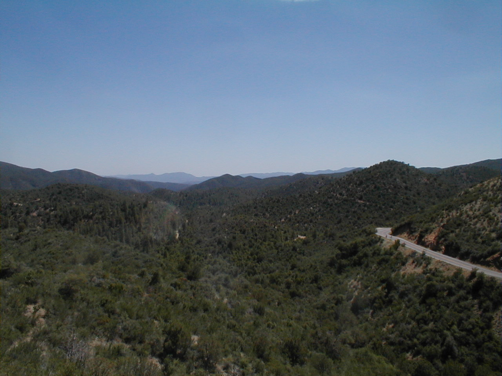

Day 5: May 17, Wickenburg, AZ to Prescott, AZPrevious Day - Home - Next Day Photo of the DayClimbing the hills in Arizona (see the cyclists on the way up?) Keegan's LogDay 5: May 17, Wickenburg, AZ to Prescott, AZ Mileage: 60.24 milesWeather: 85-100 degrees, Sunny Vertical Climb: 5470 feet Riding Time: 5.5 hours Today was a very hilly day, but it was a lot easier than the past two days. We began with a flat stretch out of Wickenburg this morning, and we stopped at a small trading post in Congress, Arizona. The shop's owner had set up a small museum in the basement, full of 'wild west' trinkets (mostly an old gun collection). We looked around for a bit before going out to begin climbing mountains. The first climb was only about 8 miles, but we rose from just above 2,000' to 4,500'. We took a break at the top, then continued along the on the flat land for a while. After a small decent, we reached a false flat, a stretch where you think you're on a flat road while you're actually climbing a hill. After an hour of pedaling along at 8 mph, we reached a grocery store and ate lunch under a shady tree. The temperatures were a lot cooler since we had ascended out of the desert, we never even saw 100 degrees today! After lunch we began on the second half of the climb, which ultimately took us up to a peak of 5,820 feet. The climb was very scenic, I had to stop every half mile or so to snap a picture of the wooded hillsides. After a few hours of climbing up the winding mountain roads, we reached the slight downhill into Prescott. Dad bought a new seat a a local bike shop, then we went to the route wrap meeting to discuss tomorrow's route. We stopped at an old restaurant in town for dinner, apparently it used to be the local saloon back in the 1800s. Tomorrow will be one of the first leisurely days, we only ride slightly over 40 miles, so we get to take the day slowly and enjoy the sights. Jerome is supposed to be a wonderful town, I'll take plenty of pictures! Phil's LogDay 5: Prescott, AZ Tracy has a "route rap" every afternoon at 5:45, if everybody is in. She is explaining about tomorrow's ride, and an awesome lunch in Jerome (Jim Dillard!). Tomorrow will be an easy day, only 43 miles. Tracy is the owner of CrossRoads, and takes great pains to explain the next day's route. She is also very safety conscious, and goes to great lengths to explain how to make a left turn. We have a sag stop at Mingus Mountain summit, and another handy break at the English Muffin Kitchen. Tracy does a terrific job of organization, of knowing the route, Kevin has had six flats so far, about six people in the flat tire pool are already goners, I'm included. Today's ride from Wickenberg to Prescott brought us from the low desert to high. saguaro and prickly pear cactus slowly disappeared as we slowly chugged up from Congress through Yarnell pass. Have you ever seen forlorn bicycle riders slowly working their way up a switchback mountain road and wondered who they were and why they were doing that? I thought often of that question, and it was us. The scenery of the valley below and the road which we had covered were gorgeous, huge expanses of western land devoid of traces of man save a small settlement and a road that we had just passed over. Tracy warned us about "false flats", sections of road that looked level but over which we found ourselves working hard and not making much progress. Many times we saw 9 mph and wondered why the difficulty, then looked behind to see that we had indeed been climbing. "False peaks" are mountain roads that look like the peak is just ahead, but you round a curve only to see that the road continues upward in another repeating cycle. We climbed 5540 feet today in three climbs, and had two fun descents. And it was, thankfully, cooler. I photographed my bike speedometer at high noon at only 98F. What a relief, sincerely! In an old weathered trading post in Congress there was David, a cute four year old kid that was somehow related to the store "family". Traci told him that we were all going to Boston on our bicycles and he responded, "What part of Boston?" Climbing. "Woo-hoo Julie", one of the support staff, said to Chris as he pulled out of a sag, "See you up the road!" Chris replied, "Not very far up the road." It was an easy day if you ignored the climbing, and we were all pretty giddy with the effort we had expended and the ridiculousness of the whole thing. There are a lot of sag stops on a climbing day, lots of Gatorade. Tomorrow will be an easy day, easy ride and fun sights. Stay tuned. And to those who have made a pledge to the Diabetic Youth Foundation, those pledges helped on today's climb. Thanks! By the way, I am receiving e-mails now. Thanks to all of you that have written! Phil & Keegan P.S. Keegan is doing a newsletter too. You can pick it up on his website, or ask and he will put you on his list. Or you can ask him, klbrown@purdue.edu |
{kind=link}